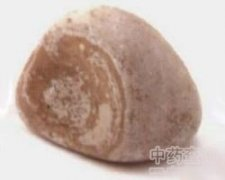

马宝

拼音
Mǎ Bǎo
别名
马粪石
来源
马科动物马Equus caballus （L.）的胃肠中的结石。全年均可收集，将病马宰杀后摸其胃肠中有结石者，取出用清水洗净，晾干。
生境分布
主产河北、内蒙古、辽宁、吉林、黑龙江、新疆、甘肃、云南、贵州、西藏等地。
药材特点
马，体格高大，骨骼肌发达，四肢强颈有力。体高1.27-1.60m，体重225-773kg。雌雄差异很大。马头面部狭长，耳小而尖，直立。鼻宽，眼大。从头顶起沿颈背至肩胛，具有长毛即鬃毛。两耳间垂向额部的长毛称门鬃。身体余部皆被短而均匀的毛，毛部也有长的鬃毛。我国马的品种较多，有蒙古、河曲、伊犁、三河、黑河等种，因品种不同，身体大小、毛色也有差异主要毛色有青毛、花毛、黑毛、栗毛等。
性状
呈球形、卵圆形或扁圆形，大小不等，一般直径约6～20厘米，重250～2500公分，但也有小如豆粒者，表面蛋青色、灰白色至油褐色，光滑有光泽，或附有杂乱的细草纹，亦有凹凸不平者。质坚体重，剖面灰白色而有同心层纹，俗称"涡纹"，且微具玻璃样光泽。其粉末在显微镜下可看到碎草的纤维。气无味淡，嚼之可成细末。以个大、质重、坚实、灰白色、光滑、剖之有层次者为佳。
性味
甘、咸、微苦，凉。
功能主治
清热化痰，镇惊安神。用于癫痫，小儿抽搐，痈肿疮毒。
用法用量
1～3分。
化学成分
马胃肠中的结石含磷酸镁（magnesium phos phate），碳酸钙（calcium carbonate），碳酸镁（magnesium carbonate）等。
药理作用
1：无药理作用数据
摘录
《全国中草药汇编》